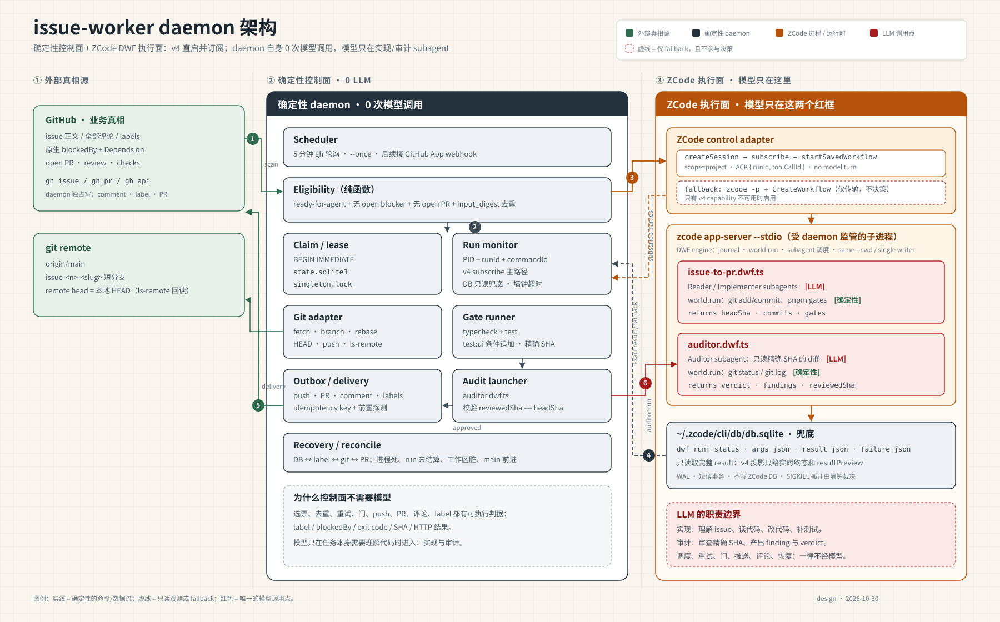

问题：daemon 作为独立外部监控，究竟哪一部分需要 LLM？
issue-to-pr.dwf.ts 的
Reader/Implementer，以及 auditor.dwf.ts 的 Auditor。
daemon 通过 app-server v4 直接 createSession、订阅 conversation、再
startSavedWorkflow。上一版设计里的 zcode -p 启动器 turn
只是 v4 不可用时的 fallback，不参与任何决策。

| 模块 | 是否调用 LLM | 判定依据 |
|---|---|---|
| Scheduler / Eligibility | 否 | label、blockedBy、Depends on、已有 PR、input_digest |
| Claim / lease / SQLite | 否 | BEGIN IMMEDIATE、lease 过期、singleton lock |
| Git adapter / Gate runner | 否 | SHA、ancestry、pnpm 退出码 |
| Outbox / delivery | 否 | gh 返回、ls-remote、幂等键 |
| Recovery / reconcile | 否 | DB、label、HEAD、PR 的可观察状态 |
| ZCode control adapter | 否（首选路径） | v4 createSession + subscribe + startSavedWorkflow，无 model turn |
| Run monitor | 否 | v4 workflowRuns / run-settled 为主；DB 只读取完整结果，并设墙钟超时 |
| ZCode control adapter（fallback） | 一次传输 turn | zcode -p 让主 Agent 调 CreateWorkflow；输出除 runId 外全部丢弃 |
issue-to-pr.dwf.ts | 是 | 理解 issue、读代码、改代码、补测试 |
auditor.dwf.ts | 是 | 审查精确 SHA 的 diff 并产出 verdict |
ready-for-human，lease 立即释放；daemon 随即从
origin/main 为 B 开新分支。A 的 PR 没有被及时 review / merge，不会阻塞 B。
只有显式依赖（blockedBy / Depends on: #N）才让 B 等待 A 关闭。
如果 A 在 B 执行期间合并，B 在交付前 rebase 到最新 main；冲突转人工。
人工把 A 重新打回 ready-for-agent 时，返工复用 A 的原分支和原 PR，不新开第二个 PR。